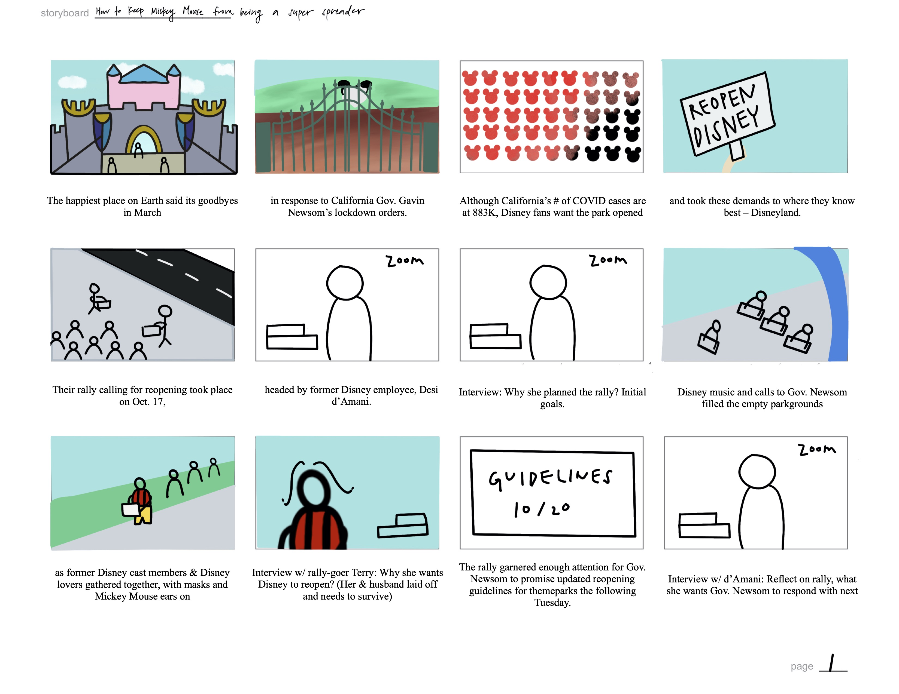
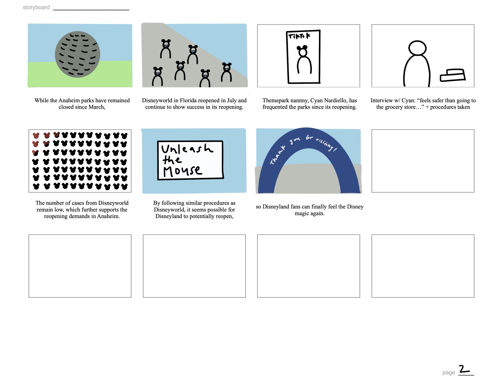
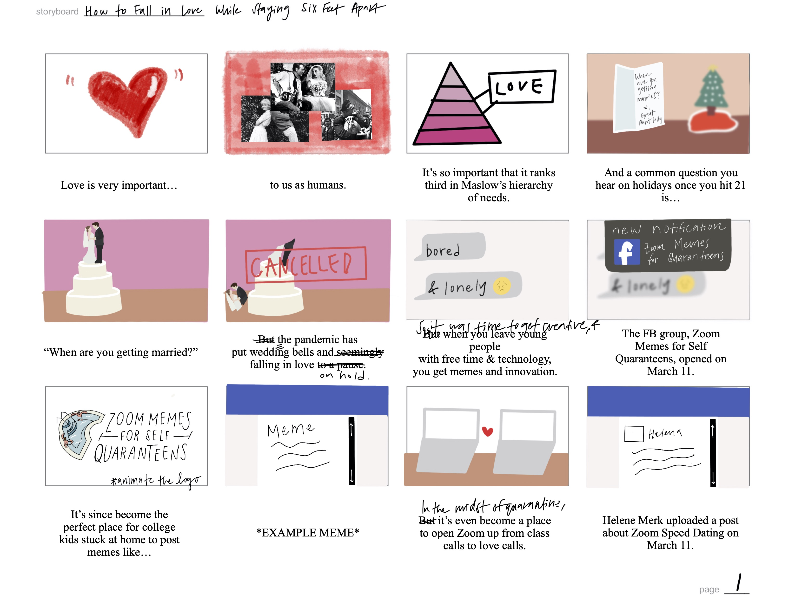
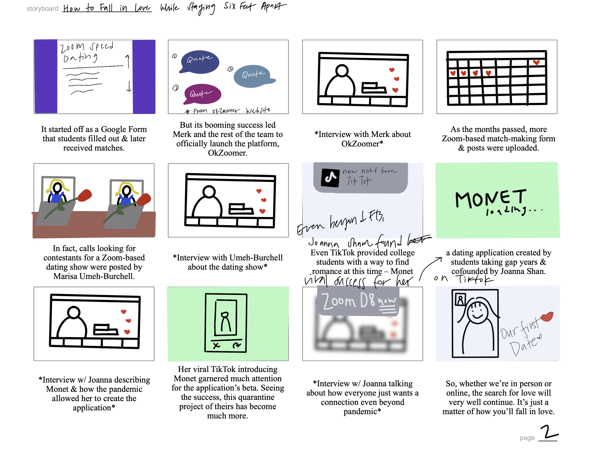

🙂 about
At the time I took this video course, we were under COVID rules and regulations, and I was one of the few students who was taking the class remotely. Despite my worries, I took advantage of the stories present in my hometown, and with the equipment Prof. Duff sent to me, I was able to create entertaining videos.
We were tasked with producing two longer-form videos by the middle and end of the quarter. Our first project was to create an explainer-style video, and after pitching various ideas, I decided to do mine on the urge to reopen the Disneyland in Anaheim. I shot in-person footage myself at a rally that had taken place the weekend before, created engaging animations and interviewed key stakeholders for the story. For our final project, I also created a longer explainer-style video about finding love under COVID conditions. In order to break up the interviews and animations, I brainstormed ideas for b-roll by creating simple stop motions and filming friends.
Once I storyboarded, I went ahead with contacting sources that I found on various social media channels like a Disney fanpage on Facebook and app developers on TikTok. For b-roll, I created animations on Adobe After Effects after creating graphics on Adobe Illustrator. While it was quite a labor-intensive project, I was very happy with the video I had produced.




My initial storyboards for my two projects, drawn on Procreate
Following this class, I looked for more opportunities to produce videos and found it at The Daily Northwestern. Throughout the devo process, I produced two videos in collaboration with the desk editors. I followed up with creating a video on how prospective students demonstrate interest in Northwestern during COVID. In the spring quarter, I was encouraged to apply for the Video Desk Editor position, which I was fortunate enough to receive. As a result, I led my own video staff, which I assisted by watching initial cuts, offering feedback on story flow and suggesting edits. At the same time, I produced stories of my own and edited town halls about the vaccine for the student body.